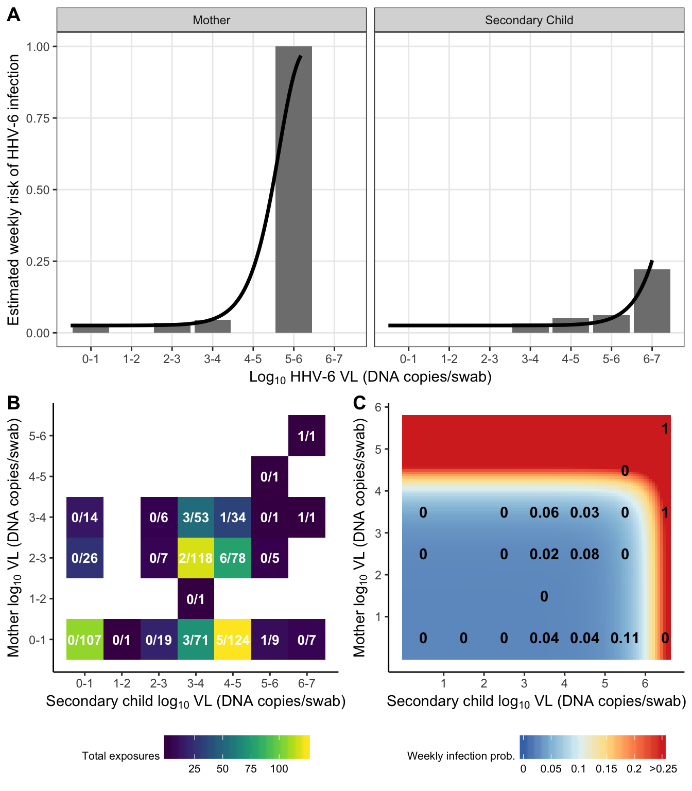
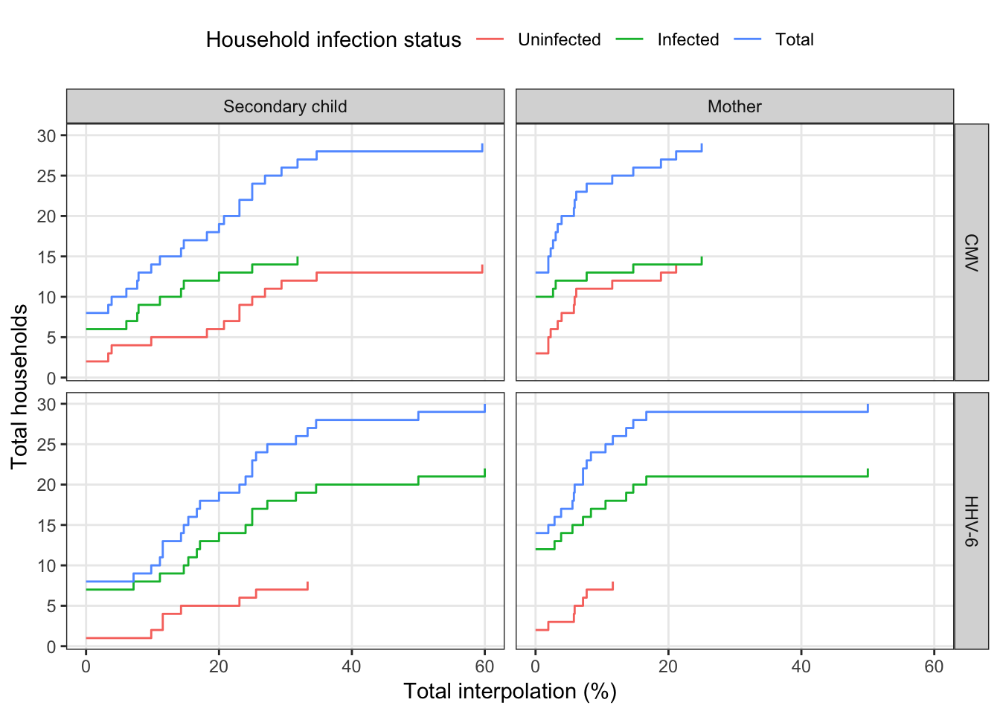
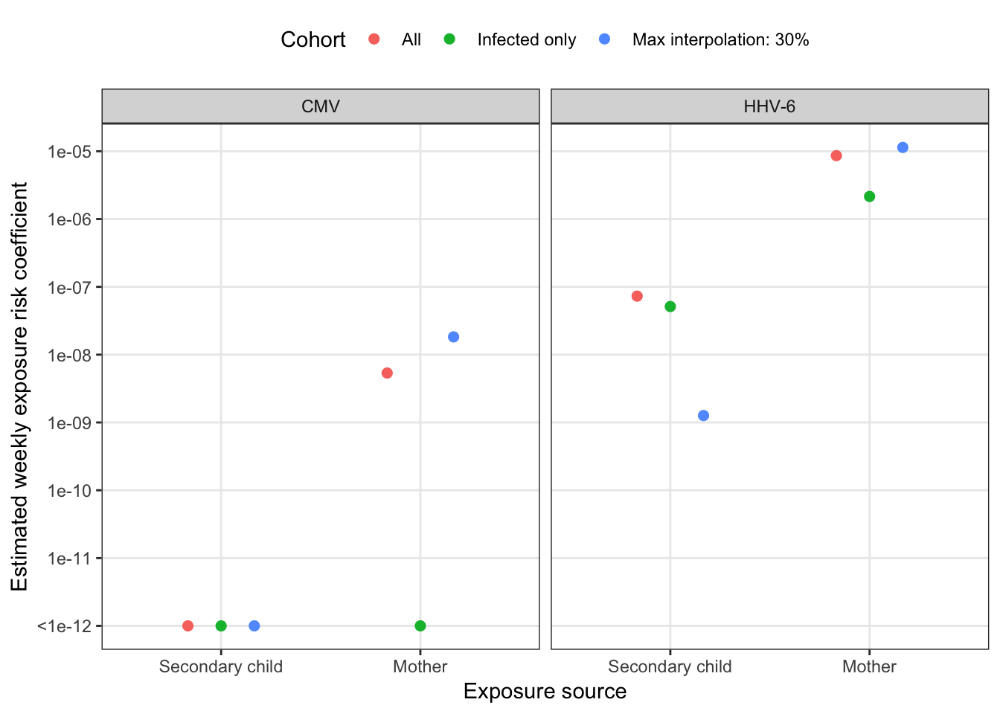

Last updated: 2019-07-08
Checks: 5 1
Knit directory: HHVtransmission/
This reproducible R Markdown analysis was created with workflowr (version 1.3.0). The Checks tab describes the reproducibility checks that were applied when the results were created. The Past versions tab lists the development history.
The R Markdown file has unstaged changes. To know which version of the R Markdown file created these results, you’ll want to first commit it to the Git repo. If you’re still working on the analysis, you can ignore this warning. When you’re finished, you can run wflow_publish to commit the R Markdown file and build the HTML.
Great job! The global environment was empty. Objects defined in the global environment can affect the analysis in your R Markdown file in unknown ways. For reproduciblity it’s best to always run the code in an empty environment.
The command set.seed(20190318) was run prior to running the code in the R Markdown file. Setting a seed ensures that any results that rely on randomness, e.g. subsampling or permutations, are reproducible.
Great job! Recording the operating system, R version, and package versions is critical for reproducibility.
Nice! There were no cached chunks for this analysis, so you can be confident that you successfully produced the results during this run.
Great! You are using Git for version control. Tracking code development and connecting the code version to the results is critical for reproducibility. The version displayed above was the version of the Git repository at the time these results were generated.
Note that you need to be careful to ensure that all relevant files for the analysis have been committed to Git prior to generating the results (you can use wflow_publish or wflow_git_commit). workflowr only checks the R Markdown file, but you know if there are other scripts or data files that it depends on. Below is the status of the Git repository when the results were generated:
Ignored files:
Ignored: .DS_Store
Ignored: .Rhistory
Ignored: .Rproj.user/
Ignored: analysis/.DS_Store
Ignored: analysis/.Rhistory
Ignored: data/.DS_Store
Ignored: docs/.DS_Store
Ignored: docs/figure/.DS_Store
Ignored: docs/figure/general-statistics.Rmd/.DS_Store
Untracked files:
Untracked: docs/figure/transmission-risk.Rmd/
Unstaged changes:
Modified: analysis/transmission-risk.Rmd
Note that any generated files, e.g. HTML, png, CSS, etc., are not included in this status report because it is ok for generated content to have uncommitted changes.
These are the previous versions of the R Markdown and HTML files. If you’ve configured a remote Git repository (see ?wflow_git_remote), click on the hyperlinks in the table below to view them.
| File | Version | Author | Date | Message |
|---|---|---|---|---|
| Rmd | aac4ccb | Bryan Mayer | 2019-06-06 | first go at transmission risk |
| html | aac4ccb | Bryan Mayer | 2019-06-06 | first go at transmission risk |
library(tidyverse)
library(conflicted)
library(kableExtra)
library(cowplot)
conflict_prefer("filter", "dplyr")
source("code/risk_fit_functions.R")
source("code/processing_functions.R")Set up model data. Only pre-processing is removing left censored family starting at week 8.
theme_set(
theme_bw() +
theme(panel.grid.minor = element_blank(),
legend.position = "top")
)
exposure_data = read_csv("data/exposure_data.csv") %>%
subset()Parsed with column specification:
cols(
FamilyID = col_character(),
virus = col_character(),
infant_wks = col_double(),
infectious_1wk = col_double(),
final_infant_wk = col_double(),
infected = col_double(),
momhiv = col_character(),
final_exposure = col_double(),
interpolate_idpar = col_character(),
M = col_double(),
S = col_double(),
HH = col_double(),
obs_infected = col_double(),
final_wk = col_double(),
outcome_time = col_double(),
enrollment_age = col_double()
)exposure_data_long = read_csv("data/exposure_data_long.csv") %>%
mutate(exposure = if_else(count == 1, 0, 10^(count))) %>%
subset()Parsed with column specification:
cols(
FamilyID = col_character(),
virus = col_character(),
infant_wks = col_double(),
infectious_1wk = col_double(),
final_infant_wk = col_double(),
infected = col_double(),
momhiv = col_character(),
final_exposure = col_double(),
interpolate_idpar = col_character(),
obs_infected = col_double(),
final_wk = col_double(),
outcome_time = col_double(),
enrollment_age = col_double(),
idpar = col_character(),
count = col_double(),
interpolated = col_logical()
)exposure_data_long %>%
subset(idpar != "HH") %>%
group_by(virus, FamilyID, idpar) %>%
mutate(any_interp = any(interpolated)) %>%
subset(any_interp) %>%
summarize(
first_obs = min(which(is.na(interpolate_idpar)))
) %>%
subset(first_obs > 2)# A tibble: 2 x 4
# Groups: virus, FamilyID [2]
virus FamilyID idpar first_obs
<chr> <chr> <chr> <int>
1 CMV AD S 8
2 HHV-6 AD S 8model_data = exposure_data %>% mutate(cohort = "All") %>% subset(FamilyID != "AD")
model_data_long = exposure_data_long %>% mutate(cohort = "All") %>% subset(FamilyID != "AD")The probability of being uninfected after a single, weekly exposure can written as following:
\[ s(i) = exp(-\beta_0 - \beta_{E}E_i) \] or \[ s(i) = exp(-\lambda(i)) \]
Instead of continuous time, we consider discretized time denoted by \(i \in \{1, ..., n+1\}\) for n+1 weeks of exposures (with n survived exposures). The likelihood follows for a single, infected participant (note that in discrete time we don’t apply an instantaneous hazard but use 1 - S(n) for the infectious week):
\[ L_j(n_j+1) = \prod_{i = 1}^{n_j} s_j(i) * (1-s_j(n_j+1))\]
for the j\(^{th}\) participant with a unique set of total exposures. We next setup the log-likelihood for the population (m participants) and use \(\Delta\) to denote an observed infection.
\[ \sum_{j = 1}^{m} log L_j(n_j) = \sum_{j = 1}^{m}\sum_{i = 1}^{n_j} log(s_j(i)) + \sum_{j = 1}^{m} \Delta_j * log(1-s_j(n_j+1))\]
The following assumptions are used: at-risk individuals are independent and the risk associated with a weekly exposures is unique from other exposures (i.e., non-infectious exposure weeks are exchangeable). From this formulation, we can find the maximum likelihood estimators for the parameters by minimizing the negative log likelihood. Both parameters are solved numerically.
The null model has the following form for weekly risk:
\[ s_0(i) = exp(-\beta_0) \]
I.e., risk is constant and not affected by household exposure. The null model has a simplified log-likelihood
\[ \sum_{j = 1}^{m} log L_j(n_j) = -\beta_0 \sum_{j = 1}^{m}n_j + log(1-exp(-\beta_0)) \sum_{j = 1}^{m} \Delta_j \]
with closed-form solution for the null risk
\[\hat{\beta_0} = -log(1 - \frac{\sum_{j = 1}^{m} \Delta_j}{\sum_{j = 1}^{m}n_j})\]
# note negative loglik is calculated
null_risk_mod = model_data %>%
group_by(virus, FamilyID) %>%
summarize(
infected = max(infectious_1wk),
surv_weeks = max(c(0, infant_wks[which(infectious_1wk == 0)]))
) %>%
group_by(virus) %>%
summarize(
null_beta = -log(1-sum(infected)/sum(surv_weeks)),
null_loglik = null_beta * sum(surv_weeks) - log(1-exp(-null_beta)) * sum(infected)
)risk_mod = model_data_long %>%
group_by(virus, idpar, cohort) %>%
nest() %>%
mutate(
likdat = map(data, create_likdat),
total = map_dbl(data, ~n_distinct(.x$FamilyID)),
total_infected = map_dbl(data, ~sum(.x$infectious_1wk)),
fit_modNM = map(likdat, ~optim(c(-12, -12), surv_logLik, likdat = .x)),
fit_modBFGS = map(likdat, ~optim(c(-12, -12), surv_logLik, likdat = .x, method = "BFGS")),
#fit_modE = map(likdat, ~optimize(surv_logLikE, c(-20, 0), likdat = .x)),
fit_resNM = map(fit_modNM, tidy_fits),
fit_resBFGS = map(fit_modBFGS, tidy_fits)
)
# using both exposures
risk_mod_both = model_data %>%
group_by(virus, cohort) %>%
nest() %>%
mutate(
likdat = map(data, create_likdat2),
total = map_dbl(data, ~n_distinct(.x$FamilyID)),
total_infected = map_dbl(data, ~sum(.x$infectious_1wk)),
fit_modNM = map(likdat, ~optim(c(-1, -3, -3), surv_logLik_2E, likdat = .x)),
fit_modBFGS = map(likdat, ~optim(c(-1, -3, -3), surv_logLik_2E, likdat = .x,
method = "BFGS")),
fit_resNM = map(fit_modNM, tidy_fits2),
fit_resBFGS = map(fit_modBFGS, tidy_fits2)
) For marginal models, BFGS finds equivalent or better loglik compared to NM. For combined model, the NM algorithm finds the equivalent or better.
risk_mod %>%
rename(NM = fit_resNM, BFGS = fit_resBFGS) %>%
unnest(BFGS, .sep = "_") %>%
unnest(NM, .sep = "_") %>%
select(virus, idpar, contains("beta"), contains("loglik")) %>%
group_by(virus, idpar) %>%
select(virus, idpar, BFGS_beta0, NM_beta0, BFGS_betaE, NM_betaE, BFGS_loglik, NM_loglik) %>%
mutate_if(is.numeric, format, digits = 3) %>%
kable(caption = "Comparing optimization results from marginal models (BFGS vs. Nelder-Mead (NM))",
digits = 3) %>%
kable_styling(full_width = F)`mutate_if()` ignored the following grouping variables:
Columns `virus`, `idpar`| virus | idpar | BFGS_beta0 | NM_beta0 | BFGS_betaE | NM_betaE | BFGS_loglik | NM_loglik |
|---|---|---|---|---|---|---|---|
| CMV | S | 0.0194 | 0.0193 | 6.03e-143 | 4.68e-10 | 74.1 | 74.1 |
| HHV-6 | S | 0.0291 | 0.0291 | 1.31e-07 | 1.31e-07 | 92.7 | 92.7 |
| CMV | M | 0.0194 | 0.0194 | 2.18e-08 | 1.83e-11 | 74.1 | 74.1 |
| HHV-6 | M | 0.0293 | 0.0293 | 7.9e-06 | 7.9e-06 | 92 | 92 |
| CMV | HH | 0.0194 | 0.0194 | 4.65e-143 | 4.66e-10 | 74.1 | 74.1 |
| HHV-6 | HH | 0.0289 | 0.0289 | 1.31e-07 | 1.32e-07 | 92.5 | 92.5 |
risk_mod_both %>%
rename(NM = fit_resNM, BFGS = fit_resBFGS) %>%
unnest(BFGS, .sep = "_") %>%
unnest(NM, .sep = "_") %>%
select(virus, contains("beta"), contains("loglik"), -contains("betaE")) %>%
group_by(virus) %>%
select(virus, BFGS_beta0, NM_beta0,
BFGS_betaM, NM_betaM,
BFGS_betaS, NM_betaS,
BFGS_loglik, NM_loglik) %>%
mutate_if(is.numeric, format, digits = 3) %>%
kable(caption = "Comparing optimization results from full model (BFGS vs. Nelder-Mead (NM))",
digits = 3) %>%
kable_styling(full_width = F)`mutate_if()` ignored the following grouping variables:
Column `virus`| virus | BFGS_beta0 | NM_beta0 | BFGS_betaM | NM_betaM | BFGS_betaS | NM_betaS | BFGS_loglik | NM_loglik |
|---|---|---|---|---|---|---|---|---|
| CMV | 0.0194 | 0.0198 | 3.94e-09 | 5.5e-08 | 0 | 7.54e-10 | 74.1 | 74.2 |
| HHV-6 | 0.035 | 0.0275 | 1.05e-13 | 5.85e-06 | 0 | 7.89e-08 | 95.7 | 90.9 |
marginal_results = risk_mod %>%
left_join(null_risk_mod, by = c("virus")) %>%
unnest(fit_resBFGS) %>%
mutate(
#null_betaE = map_dbl(fit_modE, ~exp(`$`(.x, "minimum"))),
#betaE_loglik = map_dbl(fit_modE, ~`$`(.x, "objective")),
LLR_stat = 2 * (null_loglik - loglik),
pvalue = pchisq(LLR_stat, 1, lower.tail = F)
) %>%
select(-contains("dat"), -contains("fit")) %>%
arrange(virus)
risk_mod_loglik = marginal_results %>%
subset(idpar != "HH") %>%
select(virus, idpar, loglik, betaE) %>%
gather(outcome, value, loglik, betaE) %>%
unite(mod_res, outcome, idpar) %>%
spread(mod_res, value)
combined_results = risk_mod_both %>%
group_by(virus) %>%
nest() %>%
mutate(
fit_res = if_else(virus == "CMV", map(data, unnest, fit_resBFGS),
map(data, unnest, fit_resNM))
) %>%
unnest(fit_res) %>%
select(-contains("fit"), -contains("data"), -contains("dat")) %>%
left_join(risk_mod_loglik, by = c("virus")) %>%
left_join(null_risk_mod, by = c("virus")) %>%
mutate(
LLR_stat_overall = 2 * (null_loglik - loglik),
pvalue_overall = pchisq(LLR_stat_overall, 2, lower.tail = F),
LLR_statM = 2 * (loglik_S - loglik),
pvalueM = pchisq(LLR_statM, 1, lower.tail = F),
LLR_statS = 2 * (loglik_M - loglik),
pvalueS = pchisq(LLR_statS, 1, lower.tail = F)
) %>%
arrange(virus)options(knitr.kable.NA = '')
full_results = marginal_results %>%
gather(parameter, estimate, null_beta, beta0, betaE) %>%
bind_rows(
combined_results %>% gather(parameter, estimate, beta0, betaM, betaS) %>%
mutate(
idpar = "CM",
pvalue = if_else(parameter == "betaM", pvalue_overall, NA_real_),
)
) %>%
mutate(
pvalue = if_else(parameter %in% c("null_beta", "beta0"), NA_real_, pvalue),
idpar = if_else(parameter == "null_beta", "Constant", idpar),
model = factor(idpar,
levels = c("Constant", "S", "M", "HH", "CM"),
labels = c("Constant risk", "Secondary child", "Mother",
"Household sum", "Combined model")
),
parameter = case_when(
parameter == "null_beta" ~ "beta0",
parameter == "betaE" ~ str_c("beta", idpar),
TRUE ~ parameter
),
estimate = if_else(estimate < 1e-25, 0, estimate)
) %>%
select(virus, model, parameter, estimate, pvalue) %>%
distinct()
full_results %>%
arrange(virus, model) %>%
ungroup() %>%
mutate(
pvalue = clean_pvalues(pvalue, sig_alpha = 0)
) %>%
mutate_if(is.numeric, format, digits = 3) %>%
kable(digits = 3) %>%
kable_styling(full_width = F) %>%
collapse_rows(1:2, valign = "top")| virus | model | parameter | estimate | pvalue |
|---|---|---|---|---|
| CMV | Constant risk | beta0 | 1.98e-02 | — |
| Secondary child | beta0 | 1.94e-02 | — | |
| betaS | 0.00e+00 | 0.939 | ||
| Mother | beta0 | 1.94e-02 | — | |
| betaM | 2.18e-08 | 0.950 | ||
| Household sum | beta0 | 1.94e-02 | — | |
| betaHH | 0.00e+00 | 0.939 | ||
| Combined model | beta0 | 1.94e-02 | — | |
| betaM | 3.94e-09 | 0.997 | ||
| betaS | 0.00e+00 | — | ||
| HHV-6 | Constant risk | beta0 | 3.63e-02 | — |
| Secondary child | beta0 | 2.91e-02 | — | |
| betaS | 1.31e-07 | 0.014 | ||
| Mother | beta0 | 2.93e-02 | — | |
| betaM | 7.90e-06 | 0.006 | ||
| Household sum | beta0 | 2.89e-02 | — | |
| betaHH | 1.31e-07 | 0.011 | ||
| Combined model | beta0 | 2.75e-02 | — | |
| betaM | 5.85e-06 | 0.008 | ||
| betaS | 7.89e-08 | — |
id_calc = function(b0, bE, prob){
(-log(1-prob) - b0)/(bE)
}
beta0_ests = full_results %>%
subset(model != "Constant risk" & parameter == "beta0") %>%
select(virus, model, estimate) %>%
rename(beta0 = estimate)
full_results %>%
subset(parameter != "beta0" & model != "Household sum" & virus == "HHV-6") %>%
select(-pvalue) %>%
group_by(virus, model) %>%
left_join(beta0_ests, by = c("virus", "model")) %>%
mutate(
exposure_source = factor(case_when(
parameter == "betaS" ~ "Secondary Child",
parameter == "betaM" ~ "Mother"
), levels = c("Secondary Child", "Mother")),
ID25 = id_calc(beta0, estimate, 0.25),
ID50 = id_calc(beta0, estimate, 0.5),
ID80 = id_calc(beta0, estimate, 0.8)
) %>%
ungroup() %>%
mutate_if(is.numeric, log10) %>%
mutate(constant_risk = 100*(1-exp(-10^beta0))) %>%
select(-estimate, -beta0, -parameter) %>%
arrange(virus, model, exposure_source) %>%
kable(digits = 2) %>%
kable_styling(full_width = F) %>%
collapse_rows(1:2, valign = "top") %>%
add_header_above(c(" " = 3, "Infectious dose (ID)" = 3, ""))| virus | model | exposure_source | ID25 | ID50 | ID80 | constant_risk |
|---|---|---|---|---|---|---|
| HHV-6 | Secondary child | Secondary Child | 6.30 | 6.71 | 7.08 | 2.87 |
| Mother | Mother | 4.51 | 4.92 | 5.30 | 2.88 | |
| Combined model | Secondary Child | 6.52 | 6.93 | 7.30 | 2.71 | |
| Mother | 4.65 | 5.06 | 5.43 | 2.71 |
exposure_max = exposure_data_long %>%
subset(idpar != "HH") %>%
group_by(virus, idpar) %>%
summarize(
max_exposure = max(exposure)
)
risk_data = exposure_data_long %>%
subset(idpar != "HH") %>%
mutate(
exposure_cat = floor(count) + 0.5
) %>%
group_by(idpar, virus, exposure_cat) %>%
summarize(
total_exposures = n(),
total_infected = sum(infectious_1wk),
risk = mean(infectious_1wk)
)
risk_grid = exposure_data %>%
mutate(
exposure_S = floor(S) + 0.5,
exposure_M = floor(M) + 0.5
) %>%
group_by(virus, exposure_S, exposure_M) %>%
summarize(
total_exposures = n(),
total_infected = sum(infectious_1wk),
risk = mean(infectious_1wk)
)
# risk_prediction = marginal_results %>%
# group_by(virus, idpar) %>%
# left_join(exposure_max, by = c("virus", "idpar")) %>%
# nest() %>%
# mutate(
# pred_res = map(data, ~with(.x, tibble(
# max_exposure = log10(max_exposure),
# exposure = seq(0, 5, length = 100),
# risk_full = 1 - exp(-beta0 - betaE * 10^exposure)
# #riskE = 1 - exp(-null_betaE * 10^exposure)
# )))
# ) %>%
# unnest(pred_res) %>%
# gather(risk_est, risk, risk_full)
risk_prediction_both = combined_results %>%
gather(parameter, est, betaM, betaS) %>%
mutate(idpar = str_remove(parameter, "beta")) %>%
left_join(exposure_max, by = c("virus", "idpar")) %>%
group_by(virus, idpar) %>%
nest() %>%
mutate(
pred_res = map(data, ~with(.x, tibble(
exposure = seq(0, log10(max_exposure), length = 100),
risk = 1 - exp(-beta0 - est * 10^exposure)
)))
) %>%
unnest(pred_res)
dr_plot = risk_data %>%
subset(virus == "HHV-6") %>%
ggplot(aes(x = exposure_cat, y = risk)) +
geom_bar(stat = "identity", fill = "grey50") +
geom_line(data = subset(risk_prediction_both, virus == "HHV-6"),
aes(x = exposure), size = 1.25) +
scale_y_continuous("Estimated weekly risk of HHV-6 infection", breaks = 0:4/4) +
scale_x_continuous(expression(paste("Log"[10], " HHV-6 VL (DNA copies/swab)")),
breaks = 0:6+0.5,
labels = paste(0:6, 1:7, sep = "-")) +
facet_grid(.~idpar, labeller = as_labeller(c('S' = "Secondary Child", 'M' = "Mother"))) +
theme(legend.position = "top")
exposure_heat = risk_grid %>%
subset(virus == "HHV-6") %>%
ggplot(aes(x = exposure_S, y = exposure_M, fill = total_exposures,
label = paste(total_infected, total_exposures, sep = "/"))) +
geom_tile() +
#geom_label(label.padding = unit(0.1, "lines"), label.size = 0, fill = "white") +
geom_text(fontface = "bold", colour = "white", size = 3.5) +
viridis::scale_fill_viridis("Total exposures", option = "viridis") +
scale_y_continuous(expression(paste("Mother log"[10], " VL (DNA copies/swab)")),
breaks = 0:6+0.5,
labels = paste(0:6, 1:7, sep = "-")) +
scale_x_continuous(expression(paste("Secondary child log"[10], " VL (DNA copies/swab)")),
breaks = 0:6+0.5,
labels = paste(0:6, 1:7, sep = "-")) +
theme_classic() +
theme(legend.position = "bottom",
legend.title = element_text(size = 8),
legend.text = element_text(size = 8),
legend.key.width = unit(0.75, "cm"))
risk_heat = crossing(
virus = "HHV-6",
exposure_S = seq(0,
log10(subset(exposure_max, virus == "HHV-6" & idpar == "S")$max_exposure)+0.1,
length = 100),
exposure_M = seq(0,
log10(subset(exposure_max, virus == "HHV-6" & idpar == "M")$max_exposure)+0.1,
length = 100)
) %>%
left_join(combined_results, by = "virus") %>%
mutate(
risk = 1 - exp(-beta0 - betaS * 10^exposure_S - betaM * 10^exposure_M)
) %>%
ggplot(aes(x = exposure_S, y = exposure_M, fill = pmin(risk, 0.25))) +
geom_tile() +
scale_y_continuous(expression(paste("Mother log"[10], " VL (DNA copies/swab)")),
breaks = 1:7) +
scale_x_continuous(expression(paste("Secondary child log"[10], " VL (DNA copies/swab)")),
breaks = 1:7) +
scale_fill_distiller("Weekly infection prob.", palette = "RdYlBu", breaks= c(0:5/20),
labels = c(0:4/20, " >0.25")) +
geom_text(data = subset(risk_grid, virus == "HHV-6"), aes(label = round(risk, 2)),
fontface = "bold", colour = "black") +
theme_classic() +
theme(legend.position = "bottom",
legend.title = element_text(size = 8),
legend.text = element_text(size = 8),
legend.key.width = unit(0.75, "cm"))
plot_grid(dr_plot,
plot_grid(exposure_heat, risk_heat, nrow = 1, labels = c("B", "C"), vjust = 1),
nrow = 2, labels = "A")
Make long datasets with infected only and removal of x% interpolated households. No need to look at HH.
Looking at % of interpolation: try using observed data only.
exposure_data %>%
subset(obs_infected == 1) %>%
select(virus, FamilyID) %>%
distinct() %>%
group_by(virus) %>%
summarize(n_infected = n()) %>%
kable() %>%
kable_styling(full_width = F)| virus | n_infected |
|---|---|
| CMV | 16 |
| HHV-6 | 23 |
interpolated_summary = exposure_data_long %>%
subset(idpar != "HH") %>%
mutate(
pos_count = count > 0
) %>%
group_by(virus, FamilyID, obs_infected, idpar) %>%
summarize(
interpolated_pct = 100*mean(interpolated)
) %>%
select(FamilyID, virus, idpar, obs_infected, interpolated_pct) %>%
spread(idpar, interpolated_pct) %>%
mutate(max_interp = max(c(M, S)))
interpolated_summary %>%
gather(idpar, interp, M, S) %>%
ggplot(aes(x = interp, fill = factor(obs_infected))) +
geom_histogram(binwidth = 1) +
facet_grid(idpar~virus)
interpolated_summary %>%
group_by(virus, obs_infected) %>%
summarize(
n = n(),
none = sum(max_interp == 0),
gt10 = sum(max_interp <= 10),
gt20 = sum(max_interp <= 20),
gt25 = sum(max_interp <= 25)
) %>%
kable(caption = "percent interpolated (gt = >)") %>%
kable_styling(full_width = F)| virus | obs_infected | n | none | gt10 | gt20 | gt25 |
|---|---|---|---|---|---|---|
| CMV | 0 | 14 | 2 | 5 | 6 | 10 |
| CMV | 1 | 16 | 6 | 9 | 13 | 14 |
| HHV-6 | 0 | 8 | 1 | 2 | 5 | 6 |
| HHV-6 | 1 | 23 | 7 | 8 | 14 | 17 |
fid_maxinterp = subset(interpolated_summary, max_interp == 0) %>%
ungroup() %>%
select(FamilyID, virus, max_interp)create_interp_dat = function(exp_dat, interp_dat, max_pct){
fid_max = subset(interpolated_summary, max_interp >= max_pct) %>%
ungroup() %>%
select(FamilyID, virus, max_interp)
interp_label = if(max_pct == 0) "No exposure interpolation" else paste0("Max interpolation: ", max_pct, "%")
exp_dat %>%
right_join(fid_max, by = c("virus", "FamilyID")) %>%
mutate(cohort = interp_label)
}
# duplicating the data to do sensitivity analysis for infected vs uninfected
sensitivity_data = exposure_data %>%
create_interp_dat(interpolated_summary, 0) %>%
bind_rows(mutate(subset(exposure_data, obs_infected == 1), cohort = "Infected only")) %>%
bind_rows(mutate(exposure_data, cohort = "All"))
sensitivity_data_long = exposure_data_long %>%
create_interp_dat(interpolated_summary, 0) %>%
bind_rows(mutate(subset(exposure_data_long, obs_infected == 1), cohort = "Infected only")) %>%
bind_rows(mutate(exposure_data_long, cohort = "All")) %>%
subset(idpar != "HH")null_risk_sens = sensitivity_data %>%
group_by(cohort, virus, FamilyID) %>%
summarize(
infected = max(infectious_1wk),
surv_weeks = max(c(0, infant_wks[which(infectious_1wk == 0)]))
) %>%
group_by(cohort, virus) %>%
summarize(
null_beta = -log(1-sum(infected)/sum(surv_weeks)),
null_loglik = null_beta * sum(surv_weeks) - log(1-exp(-null_beta)) * sum(infected)
)
sens_mod = sensitivity_data_long %>%
group_by(virus, idpar, cohort) %>%
nest() %>%
mutate(
likdat = map(data, create_likdat),
total = map_dbl(data, ~n_distinct(.x$FamilyID)),
total_infected = map_dbl(data, ~sum(.x$infectious_1wk)),
fit_modNM = map(likdat, ~optim(c(-1, -3), surv_logLik, likdat = .x)),
fit_modBFGS = map(likdat, ~optim(c(-1, -3), surv_logLik, likdat = .x, method = "BFGS")),
fit_resNM = map(fit_modNM, tidy_fits),
fit_resBFGS = map(fit_modBFGS, tidy_fits)
)
# using both exposures
sens_mod_both = sensitivity_data %>%
group_by(virus, cohort) %>%
nest() %>%
mutate(
likdat = map(data, create_likdat2),
total = map_dbl(data, ~n_distinct(.x$FamilyID)),
total_infected = map_dbl(data, ~sum(.x$infectious_1wk)),
fit_modNM = map(likdat, ~optim(c(-1, -3, -3), surv_logLik_2E, likdat = .x)),
fit_modBFGS = map(likdat, ~optim(c(-1, -3, -3), surv_logLik_2E, likdat = .x,
method = "BFGS")),
fit_resNM = map(fit_modNM, tidy_fits2),
fit_resBFGS = map(fit_modBFGS, tidy_fits2)
) marginal_sensitivity = sens_mod %>%
group_by(virus, cohort) %>%
nest() %>%
mutate(
fit_res = if_else(virus == "CMV", map(data, unnest, fit_resBFGS),
map(data, unnest, fit_resNM))
) %>%
unnest(fit_res) %>%
left_join(null_risk_sens, by = c("virus", "cohort")) %>%
mutate(
LLR_stat = 2 * (null_loglik - loglik),
pvalue = pchisq(LLR_stat, 1, lower.tail = F)
) %>%
select(-contains("dat"), -contains("fit")) %>%
arrange(virus) %>%
mutate(model = "Individual")
combined_sensitivity = sens_mod_both %>%
group_by(virus, cohort) %>%
nest() %>%
mutate(
fit_res = if_else(virus == "CMV", map(data, unnest, fit_resBFGS),
map(data, unnest, fit_resNM))
) %>%
unnest(fit_res) %>%
select(-contains("fit"), -contains("data"), -contains("dat")) %>%
gather(idpar, betaE, betaM, betaS) %>%
mutate(model = "Combined", idpar = str_remove_all(idpar, "beta"))combined_sensitivity %>%
mutate(idpar = factor(idpar,
levels = c("S", "M"),
labels = c("Secondary child", "Mother"))) %>%
ggplot(aes(x = idpar, y = pmax(betaE, 1e-12), colour = cohort)) +
geom_point(size = 2, position = position_dodge(width = 0.5)) +
scale_y_log10("Estimated weekly exposure risk coefficient",
breaks = 10^(-5:-12), labels = c(10^(-5:-11), "<1e-12")) +
scale_x_discrete("Exposure source", drop = F) +
facet_wrap(~ virus) +
scale_color_discrete("Cohort") +
theme(legend.position = "top", legend.box = "vertical")
sessionInfo()R version 3.6.0 (2019-04-26)
Platform: x86_64-apple-darwin15.6.0 (64-bit)
Running under: macOS Mojave 10.14.5
Matrix products: default
BLAS: /Library/Frameworks/R.framework/Versions/3.6/Resources/lib/libRblas.0.dylib
LAPACK: /Library/Frameworks/R.framework/Versions/3.6/Resources/lib/libRlapack.dylib
locale:
[1] en_US.UTF-8/en_US.UTF-8/en_US.UTF-8/C/en_US.UTF-8/en_US.UTF-8
attached base packages:
[1] stats graphics grDevices utils datasets methods base
other attached packages:
[1] cowplot_0.9.4 kableExtra_1.1.0 conflicted_1.0.3 forcats_0.4.0
[5] stringr_1.4.0 dplyr_0.8.1 purrr_0.3.2 readr_1.3.1
[9] tidyr_0.8.3 tibble_2.1.3 ggplot2_3.1.1 tidyverse_1.2.1
loaded via a namespace (and not attached):
[1] tidyselect_0.2.5 xfun_0.7 reshape2_1.4.3
[4] haven_2.1.0 lattice_0.20-38 vctrs_0.1.0
[7] colorspace_1.4-1 generics_0.0.2 htmltools_0.3.6
[10] viridisLite_0.3.0 yaml_2.2.0 utf8_1.1.4
[13] rlang_0.4.0 pillar_1.4.1 glue_1.3.1
[16] withr_2.1.2 selectr_0.4-1 RColorBrewer_1.1-2
[19] modelr_0.1.4 readxl_1.3.1 plyr_1.8.4
[22] munsell_0.5.0 gtable_0.3.0 workflowr_1.3.0
[25] cellranger_1.1.0 rvest_0.3.4 evaluate_0.14
[28] memoise_1.1.0 labeling_0.3 knitr_1.23
[31] fansi_0.4.0 highr_0.8 broom_0.5.2
[34] Rcpp_1.0.1 scales_1.0.0 backports_1.1.4
[37] webshot_0.5.1 jsonlite_1.6 fs_1.3.1
[40] gridExtra_2.3 hms_0.4.2 digest_0.6.19
[43] stringi_1.4.3 grid_3.6.0 rprojroot_1.3-2
[46] cli_1.1.0 tools_3.6.0 magrittr_1.5
[49] lazyeval_0.2.2 zeallot_0.1.0 crayon_1.3.4
[52] whisker_0.3-2 pkgconfig_2.0.2 xml2_1.2.0
[55] lubridate_1.7.4 viridis_0.5.1 assertthat_0.2.1
[58] rmarkdown_1.13 httr_1.4.0 rstudioapi_0.10
[61] R6_2.4.0 nlme_3.1-140 git2r_0.25.2
[64] compiler_3.6.0